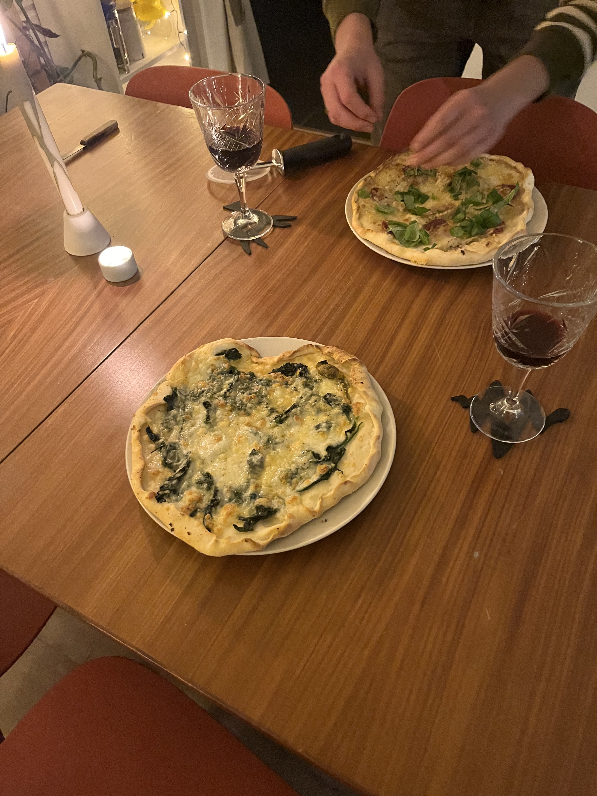

Home made pizza dough

Some jummy pizza
Ingredients
-
Water – Always use lukewarm water, make sure the
temperature is between 98-105F (36-40C). Never use hot or you will kill
the yeast and with cold water the yeast will take forever to rise.
-
Yeast – I like to use active dry yeast but you could
also use instant yeast, for every teaspoon of active dry yeast
substitute with 3/4 teaspoon of instant.
-
Sugar -It is considered food for the yeast, which
converts it to carbon dioxide and alcohol. It also helps enhance the
flavour of the pizza.
-
Olive Oil – It helps to tenderize the dough and add a
wonderful flavour.
-
Flour – I usually use all purpose or bread flour, you
will need a flour that has at least 12% protein. Bread flour will
produce a chewier crust.
- Salt – Is necessary to add flavour to the dough.
Steps
- To start make sure your yeast is active,
-
In a small bowl add the water, make sure it is lukewarm (if it is too
warm it will kill the yeast), then add a pinch of sugar to the water.
-
Sprinkle the yeast over the top, stir to combine, then let it rest for
about 5 minutes.
-
If the yeast is active it will dissolve in the water and the mixture
will bubble.